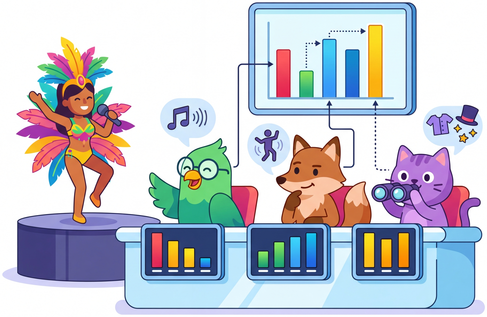

Why spend months building a document parsing pipeline when a vision model can just look at the page?
Vec AI Agent
Prerequisites
This section builds on the embedding fundamentals and similarity search concepts from Section 19.1 and the vector database architecture covered in Section 19.2. Understanding the document chunking strategies from Section 19.4 is especially valuable, as vision-based retrieval offers an alternative to the text extraction pipelines discussed there. The multimodal model concepts from Section 27.1 provide additional context for how vision encoders process document images.
Traditional document retrieval is like a librarian who can only search a typed index of keywords. If a document contains a chart, a complex table, or a handwritten annotation, the librarian cannot find it because those elements never made it into the index. Vision-based retrieval is like giving the librarian the ability to flip through actual pages, glancing at charts, tables, headers, and figures to find the relevant page. The librarian does not need to read every word; a quick visual scan of the page layout, colors, and structure is often enough to identify relevance. That is exactly what ColPali and similar models do: they "look" at document pages as images and match them to text queries.

1. The Problem with Text-Only Document Retrieval Basic
The standard RAG pipeline for documents follows a predictable sequence: parse the document (PDF, Word, HTML) into text, chunk the text, embed the chunks, and store them in a vector database. This pipeline works well for text-heavy documents but struggles with visually rich content. The failure modes are systematic and well-documented:
- Tables lose structure: A PDF table becomes a jumbled sequence of cell values after text extraction. The spatial relationships between headers and data cells, which carry the meaning, are destroyed.
- Charts become invisible: Bar charts, line graphs, and diagrams contain information that never appears in extracted text. A pie chart showing market share is simply absent from the text index.
- Layout carries meaning: In financial reports, the position of numbers on the page (which column, which row) determines what they mean. Flat text extraction discards this positional information.
- OCR introduces errors: Scanned documents require OCR, which introduces character-level errors that accumulate into retrieval failures. A misspelled company name or garbled number will not match any query.
- Multi-language documents: Documents mixing scripts (English headers with Japanese body text, Arabic annotations on English diagrams) are particularly fragile under text extraction.
These failures are not edge cases. In enterprise settings, a significant fraction of knowledge lives in slide decks, scanned forms, technical drawings, and formatted reports where layout and visual elements carry essential information. The traditional text pipeline silently drops this information, and no amount of embedding model improvement can recover what was never extracted.
The core insight behind vision-based retrieval is that the document parsing pipeline is the bottleneck, not the embedding model. Rather than building increasingly complex parsing pipelines (OCR, table detection, chart interpretation, layout analysis), vision-based retrieval skips parsing entirely. It processes each page as an image and directly computes relevance between a text query and the visual content of the page. This eliminates an entire category of engineering complexity and failure modes.
2. ColPali: The Architecture Intermediate
ColPali (2024) is the model that brought vision-based document retrieval from research curiosity to practical tool. Its name combines "Col" (from ColBERT's late interaction mechanism, introduced in Section 19.1) with "Pali" (from Google's PaLI vision-language model). The architecture has two key components: a vision-language backbone that produces per-patch embeddings from document images, and a late interaction scoring mechanism that computes fine-grained relevance between query tokens and image patches.
How ColPali Processes a Page
Given a document page rendered as an image (typically 448x448 or higher resolution), ColPali processes it through a vision transformer that divides the image into a grid of patches (for example, 32x32 patches). Each patch produces a 128-dimensional embedding vector. A single page therefore produces approximately 1,024 embedding vectors, each representing a small region of the page. These patch embeddings encode both the textual content visible in that region and the visual context (layout, formatting, surrounding elements).
The query side is simpler: a text query is tokenized and each token is projected into the same 128-dimensional space. The relevance score between a query and a page is computed using MaxSim (Maximum Similarity), the same late interaction mechanism from ColBERT.
MaxSim: Late Interaction Scoring
The MaxSim scoring function is the key to ColPali's retrieval quality. For a query q with tokens q1, $q_{2}$, ..., $q_{n}$ and a document page with patch embeddings p1, $p_{2}$, ..., $p_{m}$, the relevance score is:
In words: for each query token, find the document patch that is most similar to it, then sum these maximum similarities across all query tokens. This allows different parts of the query to match different regions of the page. The token "revenue" might match a cell in a table, while "chart" matches a visual element in the corner, and "Q3" matches a heading at the top. Single-vector retrieval (like standard dense retrieval) compresses the entire page into one vector and cannot capture this multi-region matching.
A small numeric example with 2 query tokens and 3 document patches makes this concrete:
# MaxSim scoring: numeric walkthrough
import numpy as np
# Similarity matrix: sim(q_i, p_j) for 2 query tokens, 3 patches
sim = np.array([
[0.8, 0.3, 0.1], # query token "revenue" similarities to patches
[0.2, 0.5, 0.9], # query token "chart" similarities to patches
])
max_per_query = sim.max(axis=1) # [0.8, 0.9]
score = max_per_query.sum() # 0.8 + 0.9 = 1.7
print(f"MaxSim per query token: {max_per_query}") # [0.8, 0.9]
print(f"Total MaxSim score: {score}") # 1.7
# "revenue" matched patch 0 best; "chart" matched patch 2 best.Late interaction requires storing all patch embeddings for every page, not just a single vector. A page with 1,024 patches at 128 dimensions uses approximately 512 KB of storage (in float32). For a corpus of 1 million pages, that is roughly 500 GB, compared to about 3 GB for single-vector retrieval at 768 dimensions. This storage cost is the primary tradeoff for the improved retrieval quality. In practice, quantization (storing patch embeddings as int8 or binary) reduces this by 4x to 32x with minimal quality loss.
3. ColQwen and the Evolving Model Family Intermediate
ColPali was the first model to demonstrate the approach, but the architecture generalizes to any vision-language backbone. ColQwen2 (2024) replaces PaLI with the Qwen2-VL vision-language model, achieving stronger performance on the ViDoRe benchmark. The key differences: Code Fragment 19.5.3 below puts this into practice.
- Higher resolution: ColQwen2 processes images at higher resolution with dynamic resolution support, producing more patch embeddings per page and better capturing fine-grained text and small visual elements.
- Stronger multilingual support: Qwen2-VL's multilingual pretraining transfers to document retrieval, making ColQwen2 significantly better on non-English documents.
- Improved training data: ColQwen2 was trained on a larger and more diverse set of query-page pairs, including financial documents, scientific papers, slide decks, and forms.
# implement embed_pages, embed_queries, maxsim_score
# Key operations: training loop, embedding lookup, results display
import torch
from colpali_engine.models import ColQwen2, ColQwen2Processor
from PIL import Image
from typing import List
# Load model and processor
model_name = "vidore/colqwen2-v1.0"
model = ColQwen2.from_pretrained(
model_name,
torch_dtype=torch.float16,
device_map="auto",
)
processor = ColQwen2Processor.from_pretrained(model_name)
def embed_pages(images: List[Image.Image]) -> torch.Tensor:
"""
Embed document page images into multi-vector representations.
Returns tensor of shape (n_pages, n_patches, embedding_dim).
"""
batch = processor.process_images(images).to(model.device)
with torch.no_grad():
embeddings = model(**batch)
return embeddings # (n_pages, n_patches, 128)
def embed_queries(queries: List[str]) -> torch.Tensor:
"""
Embed text queries into multi-vector representations.
Returns tensor of shape (n_queries, n_tokens, embedding_dim).
"""
batch = processor.process_queries(queries).to(model.device)
with torch.no_grad():
embeddings = model(**batch)
return embeddings # (n_queries, n_tokens, 128)
def maxsim_score(
query_embeddings: torch.Tensor,
page_embeddings: torch.Tensor,
) -> torch.Tensor:
"""
Compute MaxSim scores between queries and pages.
Args:
query_embeddings: (n_queries, n_tokens, dim)
page_embeddings: (n_pages, n_patches, dim)
Returns:
Scores tensor of shape (n_queries, n_pages)
"""
scores = torch.einsum(
"qtd,npd->qntp", query_embeddings, page_embeddings
)
# For each query token, take max over all patches
max_over_patches = scores.max(dim=-1).values # (q, n, t)
# Sum over query tokens
return max_over_patches.sum(dim=-1) # (q, n)
# Example usage
pages = [
Image.open("financial_report_p1.png"),
Image.open("financial_report_p2.png"),
Image.open("org_chart.png"),
Image.open("product_roadmap.png"),
]
queries = ["Q3 revenue breakdown by region", "engineering team structure"]
page_embs = embed_pages(pages)
query_embs = embed_queries(queries)
scores = maxsim_score(query_embs, page_embs)
# Rank pages for each query
for i, query in enumerate(queries):
ranked = scores[i].argsort(descending=True)
print(f"\nQuery: '{query}'")
for rank, idx in enumerate(ranked[:3]):
print(f" Rank {rank+1}: Page {idx.item()+1} (score: {scores[i][idx]:.2f})")4. The ViDoRe Benchmark Intermediate
The Visual Document Retrieval Benchmark (ViDoRe) was introduced alongside ColPali to provide a standardized evaluation for vision-based document retrieval. It covers a diverse set of document types and languages, making it the primary benchmark for comparing approaches. The benchmark includes:
| Dataset | Document Type | Language | Key Challenge |
|---|---|---|---|
| TAT-DQA | Financial reports | English | Tables, charts, numerical reasoning |
| DocVQA | Mixed documents | English | Diverse layouts, forms, receipts |
| InfoVQA | Infographics | English | Complex visual layouts, diagrams |
| ArXivQA | Scientific papers | English | Equations, figures, dense text |
| Shift Project | Energy reports | French | Cross-lingual, technical charts |
| Artificial | Synthetic test pages | Multiple | Controlled difficulty evaluation |
On ViDoRe, ColQwen2 achieves NDCG@5 scores of 85 to 92% across datasets, compared to 60 to 75% for traditional text-extraction pipelines using the same queries. The largest gains appear on documents with complex visual elements: infographics (+25 points), financial tables (+18 points), and charts (+22 points). On purely text-heavy documents with clean layouts, the advantage narrows to 3 to 5 points, confirming that vision-based retrieval is most valuable when documents are visually rich.
5. Two-Stage Retrieval Pipeline Intermediate
In production, pure ColPali/ColQwen retrieval can be expensive because late interaction requires storing and scoring against all patch embeddings. A practical architecture uses two stages: a fast first stage for candidate generation, followed by ColPali rescoring on the top candidates. Code Fragment 19.5.3 below puts this into practice.
# Define PageResult, TwoStageRetriever; implement __init__, index_page, retrieve
# Key operations: embedding lookup, results display, retrieval pipeline
import numpy as np
from typing import List, Dict, Tuple
from dataclasses import dataclass
@dataclass
class PageResult:
page_id: str
score: float
source_doc: str
page_number: int
class TwoStageRetriever:
"""
Two-stage retrieval: fast first stage + ColQwen2 rescoring.
Stage 1: Use single-vector embeddings (mean-pooled patch embeddings)
stored in a standard vector DB for fast ANN search.
Stage 2: Rerank top-K candidates using full MaxSim scoring
against stored patch embeddings.
"""
def __init__(self, model, processor, vector_db, patch_store):
self.model = model
self.processor = processor
self.vector_db = vector_db # Standard vector DB (single vectors)
self.patch_store = patch_store # Storage for full patch embeddings
def index_page(self, page_id: str, image, metadata: dict):
"""Index a page for both retrieval stages."""
# Generate patch embeddings
batch = self.processor.process_images([image]).to(self.model.device)
with torch.no_grad():
patch_embs = self.model(**batch)[0] # (n_patches, dim)
# Stage 1: Store mean-pooled vector in standard vector DB
mean_vector = patch_embs.mean(dim=0).cpu().numpy()
self.vector_db.upsert(
ids=[page_id],
vectors=[mean_vector.tolist()],
metadata=[metadata],
)
# Stage 2: Store full patch embeddings for rescoring
self.patch_store.save(page_id, patch_embs.cpu())
def retrieve(
self,
query: str,
first_stage_k: int = 100,
final_k: int = 10,
) -> List[PageResult]:
"""
Two-stage retrieval with ColQwen2 rescoring.
Args:
query: Text query
first_stage_k: Candidates from first stage
final_k: Final results after rescoring
"""
# Stage 1: Fast candidate generation
query_batch = self.processor.process_queries([query])
query_batch = query_batch.to(self.model.device)
with torch.no_grad():
query_embs = self.model(**query_batch)[0] # (n_tokens, dim)
# Mean-pool query for first-stage ANN search
query_vector = query_embs.mean(dim=0).cpu().numpy()
candidates = self.vector_db.query(
vector=query_vector.tolist(),
top_k=first_stage_k,
)
# Stage 2: MaxSim rescoring on candidates
results = []
for candidate in candidates:
page_patches = self.patch_store.load(candidate.id)
page_patches = page_patches.to(self.model.device)
# MaxSim: for each query token, max similarity over patches
sim_matrix = torch.matmul(
query_embs, page_patches.T
) # (n_tokens, n_patches)
max_sims = sim_matrix.max(dim=1).values # (n_tokens,)
score = max_sims.sum().item()
results.append(PageResult(
page_id=candidate.id,
score=score,
source_doc=candidate.metadata.get("source", ""),
page_number=candidate.metadata.get("page", 0),
))
# Sort by MaxSim score and return top results
results.sort(key=lambda r: r.score, reverse=True)
return results[:final_k]
# Usage pattern
# retriever = TwoStageRetriever(model, processor, vector_db, patch_store)
# results = retriever.retrieve("quarterly revenue by product line", final_k=5)
# for r in results:
# print(f" {r.source_doc} p.{r.page_number}: {r.score:.1f}")Full MaxSim scoring against every page in a large corpus is computationally expensive. For 1 million pages with 1,024 patches each, scoring a single query requires approximately 1 billion dot products. The two-stage architecture reduces this by 100x to 1000x: the first stage (standard ANN search on mean-pooled vectors) runs in milliseconds, and MaxSim rescoring on 100 candidates takes 50 to 200ms on a GPU. Without the two-stage design, latency would be 5 to 20 seconds per query at this scale.
6. When to Use Vision-Based Retrieval Intermediate
Vision-based retrieval is not a universal replacement for text-based retrieval. It excels in specific scenarios and introduces tradeoffs that practitioners should evaluate carefully.
Strong Use Cases
- Slide decks and presentations: Information is inherently visual (diagrams, formatted text boxes, images). Text extraction loses most of the content.
- Financial documents: Tables, charts, and formatted reports where layout encodes meaning.
- Scanned documents: Handwritten notes, historical records, forms with checkboxes. Vision models bypass OCR entirely.
- Technical drawings: Engineering diagrams, floor plans, circuit schematics where the visual content is primary.
- Multilingual document collections: Vision models handle mixed scripts naturally without language-specific text extraction.
Cases Where Text Retrieval Is Better
- Long text documents: A 50-page legal contract is better served by text chunking than by scoring 50 page images independently.
- Keyword-heavy queries: Exact term matching (case numbers, product codes, specific names) is faster and more reliable with text-based BM25.
- Very large corpora: The storage and computation costs of late interaction scale linearly with corpus size. At tens of millions of pages, the cost may be prohibitive without aggressive quantization.
The ColPali team discovered that their model could retrieve relevant pages even when the query language differed from the document language. A query in English could match a French financial report because the vision model recognized that bar charts and table structures are language-independent. The numbers "1.2M EUR" in a chart are visually similar regardless of whether the surrounding text is in English or French.
7. Integration with RAG Pipelines Intermediate
Vision-based retrieval slots into a RAG pipeline at the retrieval stage, but the downstream steps change. After retrieving relevant pages as images, you pass the page images directly to a multimodal LLM (GPT-4o, Claude, Gemini) rather than passing extracted text. The LLM receives the original page image and the question, preserving all visual context that would be lost in text extraction.
This creates a clean pipeline: render pages as images, embed with ColQwen2, store in a vector database, retrieve top pages for a query, send page images to a multimodal LLM for answer generation. The entire document parsing, chunking, and metadata extraction pipeline is replaced by a single rendering step (PDF to image), which is fast, deterministic, and lossless.
The combination of vision-based retrieval with multimodal LLMs creates an end-to-end pipeline that never converts documents to text. Documents go in as images and come out as answers. This eliminates the entire text extraction stack (OCR, layout detection, table parsing, chunk boundary detection) and the errors each step introduces. The tradeoff is higher compute cost at both retrieval (late interaction) and generation (multimodal LLM), but for visually rich documents the quality improvement is dramatic.
Who: A data engineering team at a multinational insurance company
Situation: The company needed to search across 2 million scanned claim forms, policy documents, and medical reports in six languages. These documents contained tables, handwritten annotations, checkboxes, stamps, and mixed-language content.
Problem: Their existing OCR pipeline (Tesseract plus custom table detection) required separate parsers for each document type and language. Accuracy on scanned handwritten forms was below 60%, and the pipeline took 18 months to build.
Decision: They replaced the entire parsing stack with ColQwen2, rendering each document page as an image and indexing the patch embeddings directly. A two-stage retrieval architecture (mean-pooled vectors for first-stage ANN, MaxSim rescoring on top 200 candidates) kept query latency under 300ms.
Result: Retrieval accuracy on visually complex documents improved from 52% to 81% (recall@10). The engineering team eliminated four separate OCR configurations and two custom table parsers. Total pipeline complexity dropped from 12 microservices to 3.
Lesson: For document collections dominated by complex layouts, scanned content, and multilingual materials, vision-based retrieval can replace an entire text extraction stack while delivering better retrieval quality.
Show Answer
Show Answer
Show Answer
Show Answer
Key Takeaways
- Traditional document retrieval loses information from tables, charts, diagrams, and formatted layouts during text extraction. Vision-based retrieval eliminates this loss by processing pages as images.
- ColPali/ColQwen2 combine a vision-language backbone with late interaction (MaxSim) scoring to achieve fine-grained matching between text queries and visual page regions.
- Late interaction (MaxSim) lets different query tokens match different page regions independently, capturing multi-region relevance that single-vector retrieval cannot.
- The storage tradeoff is significant: storing per-patch embeddings costs approximately 500 GB per million pages (float32), compared to 3 GB for single-vector retrieval. Quantization mitigates this substantially.
- Two-stage retrieval (fast ANN search, then MaxSim rescoring) is essential for production scaling, reducing computation by 100x to 1000x.
- Vision-based retrieval excels on slide decks, financial documents, scanned forms, and multilingual collections. Text retrieval remains better for long text documents and exact keyword matching.
- Combined with multimodal LLMs, vision-based retrieval creates an end-to-end pipeline that never converts documents to text, eliminating the entire parsing stack and its associated errors.
Several research directions are expanding the capabilities of vision-based retrieval. Efficient late interaction explores binary and product quantization of patch embeddings, reducing storage by 16x to 32x with less than 2% quality loss. Cross-page reasoning extends the approach to retrieve coherent multi-page segments rather than individual pages, which is important for documents where information spans consecutive pages. Hybrid retrieval combines text-based and vision-based signals in a learned fusion model, using text retrieval for keyword precision and vision retrieval for layout-dependent content. Early results suggest that this hybrid approach outperforms either modality alone across all document types. Perhaps most exciting, generative retrieval approaches are training vision-language models to directly output document identifiers given a query, potentially bypassing the embedding and scoring pipeline entirely.
Exercises INTERMEDIATE
How to use these exercises: These exercises cover vision-based document retrieval concepts. Coding exercises require the colpali-engine library.
List three types of documents where OCR-based text extraction loses important information that a vision-based approach would preserve.
Show Answer
Infographics (spatial layout carries meaning), scanned forms (handwriting, checkboxes), and financial reports with complex tables (row/column alignment lost in text extraction).
Explain how ColPali's late interaction scoring mechanism works. How does it differ from a single-vector bi-encoder approach?
Show Answer
ColPali produces per-patch embeddings for document images and per-token embeddings for queries. Scoring uses MaxSim: for each query token, find its maximum similarity to any document patch, then sum these maxima. This preserves fine-grained matching, unlike a single-vector approach that compresses all information into one vector.
Your corpus contains 80% plain text documents and 20% complex PDFs with charts. Would you use ColPali for the entire corpus or only the complex PDFs? Justify your answer.
Show Answer
Use a hybrid approach: text embedding for plain text documents (cheaper, faster) and ColPali for complex PDFs. Running ColPali on plain text wastes compute and storage since text embeddings are sufficient. Route queries based on document type.
Why is a dedicated benchmark for visually-rich document retrieval necessary? What limitations of standard text retrieval benchmarks does ViDoRe address?
Show Answer
Standard text benchmarks assume clean text input. ViDoRe tests retrieval over actual document images where layout, tables, and figures are integral to answering queries. It measures whether models can find relevant information that exists only in visual form.
ColPali produces one embedding per image patch (typically hundreds per page). Compare the storage requirements against a text-based approach that produces one embedding per chunk. How does a two-stage pipeline mitigate this?
Show Answer
ColPali: hundreds of embeddings per page (e.g., 1024 patches at 128 dims at 2 bytes = ~256KB per page). Text approach: ~5 to 10 chunks per page at 768 dims at 4 bytes = ~15 to 30KB per page. ColPali uses 10 to 20x more storage. Two-stage: store binary quantized embeddings (32x compression) for first stage, full precision only for top candidates.
Use a pretrained ColPali model to embed two document page images and a text query. Compute the late interaction similarity score and visualize which patches have the highest relevance to the query.
Take 10 PDF pages that contain both text and figures. Compare retrieval accuracy for 5 test queries using (a) text-extracted chunks with a text embedding model and (b) ColPali page-level embeddings.
Implement a two-stage retrieval pipeline: use binary quantized ColPali embeddings for fast first-stage retrieval over 1000 pages, then rerank the top 20 with full-precision late interaction scoring. Measure latency and recall improvements.
What Comes Next
In the next chapter, Chapter 20: Retrieval-Augmented Generation (RAG), we bring embeddings, vector databases, and retrieval strategies together into complete RAG systems that ground LLM responses in external knowledge.
Faysse, M. et al. (2024). ColPali: Efficient Document Retrieval with Vision Language Models.
The foundational paper introducing ColPali's architecture and the ViDoRe benchmark. Demonstrates that vision-based retrieval with late interaction outperforms text-extraction pipelines on visually rich documents. Essential reading for understanding the approach covered in this section.
Vidore Team. (2024). ColQwen2: Vision Document Retrieval with Qwen2-VL. Hugging Face.
The ColQwen2 model card with benchmarks, usage examples, and comparison to ColPali. ColQwen2 achieves state-of-the-art results on ViDoRe by leveraging the stronger Qwen2-VL backbone.
ViDoRe Benchmark. (2024). Visual Document Retrieval Leaderboard. Hugging Face.
The official leaderboard for vision-based document retrieval, tracking model performance across multiple document types and languages. Useful for comparing the latest models and understanding the state of the field.
The original ColBERT paper that introduced the MaxSim late interaction mechanism for text retrieval. ColPali adapts this mechanism from text token embeddings to vision patch embeddings. Understanding ColBERT provides the theoretical foundation for the scoring mechanism used in vision-based retrieval.
Technical details of the Qwen2-VL model that serves as ColQwen2's backbone. The dynamic resolution and multilingual capabilities of Qwen2-VL are key to ColQwen2's improvements over ColPali.
Illuin Technology. (2024). colpali-engine: Python Library for Vision Document Retrieval. GitHub.
The official open-source library for using ColPali and ColQwen2 models, with utilities for indexing, querying, and evaluation. The code examples in this section use this library.